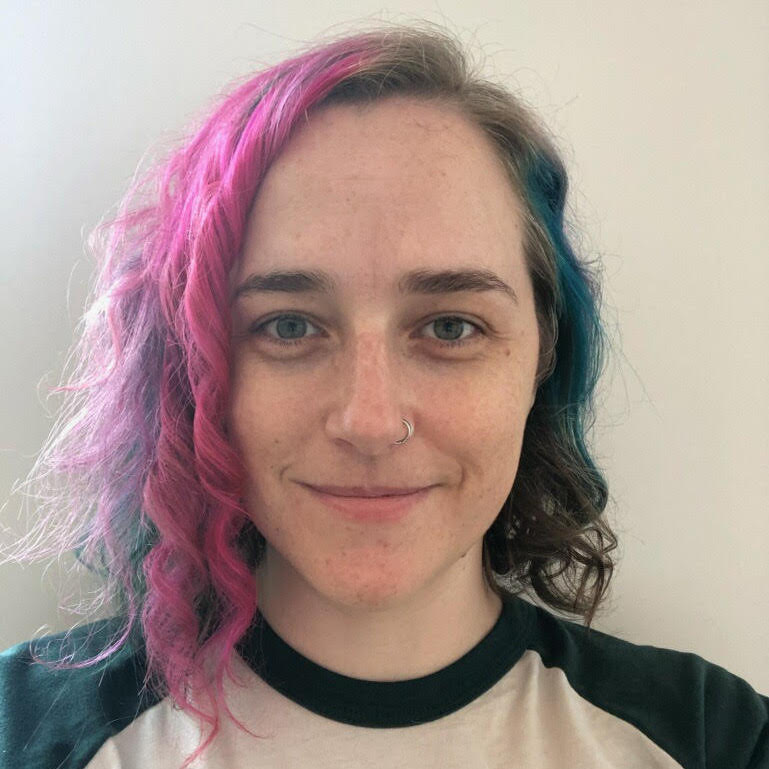
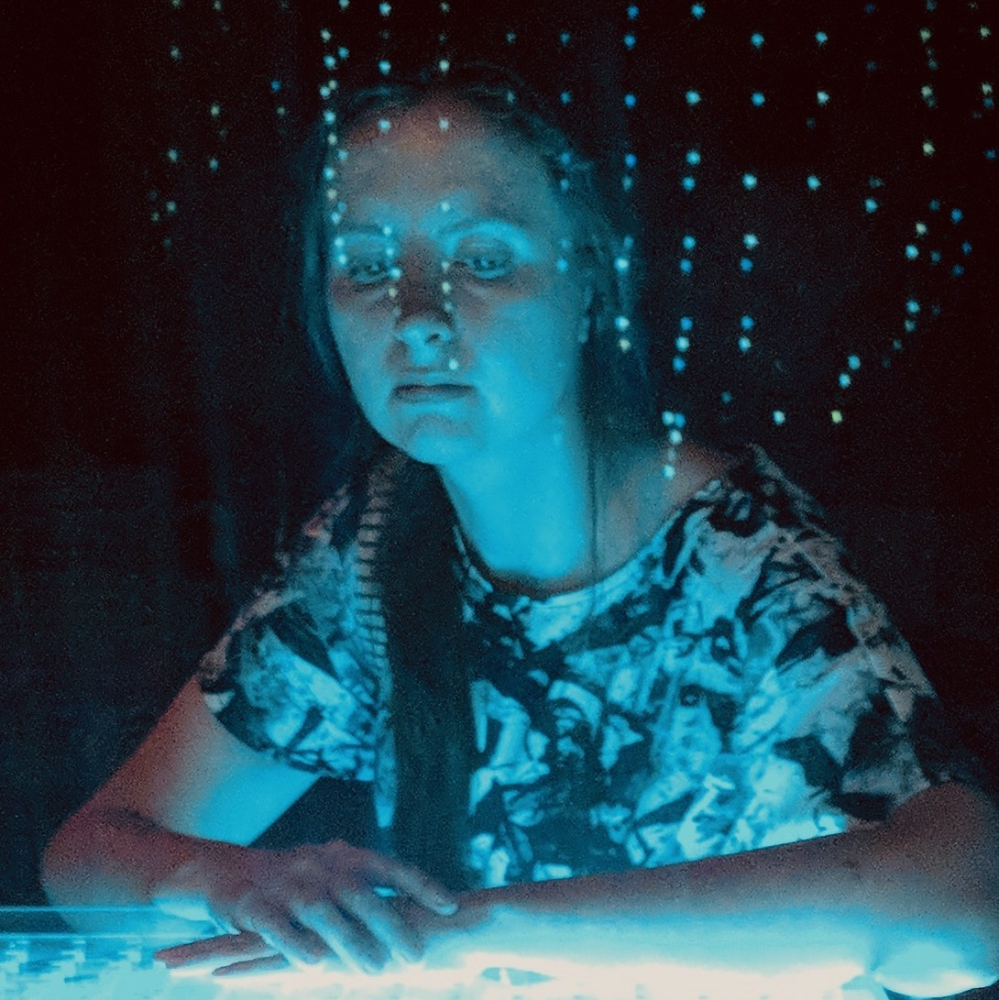
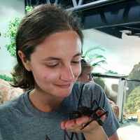

Who’s speaking at !!Con West?
Keynote Speakers
isis agora lovecruft
isis lovecruft is a cryptographer who has contributed to Signal, The Tor Project, the Electronic Frontier Foundation, and many others. They enjoy making fast, safe, and hard-to-misuse cryptographic libraries in Rust, walking through woods with their wolfhound familiar, and casting curses on evildoers in tech to turn them into umbrellas.
Erin Rose Glass
Erin Glass is a writer, consultant, and librarian at UC San Diego, where she advises on emerging forms of digital research, education, infrastructure, and community. She is co-founder of Ethical EdTech and Social Paper, and director of KNIT, a digital commons for higher education in San Diego. Her research focuses on the use of the arts and humanities to resist technological forms of surveillance and control.
Lightning Talks
(Speakers are sorted by sha256sum of their name, of course!)
Phil Warren
Beyond the Black Rainbow: Why You Can’t Photograph Infrared Rainbows, and Using Booleans to Do It Anyway!
Why are there so many talks about rainbows? And what’s on the other side? Rainbows are visions, but not illusions, and rainbows have something to hide!
Frustratingly, infrared photographers find that they can never photograph the invisible extra stripes beyond red in a rainbow. Instead, they’ll only see a single monochromatic band! We will explore why, and dive into the boolean solution to make a three-channel model that reveals a full -olor unseen world! Then, we’ll look at pictures of a world entirely in a spectrum we can’t see!
Phil Warren works in R&D in image technology, and enjoys adventures, eating things, and meeting people. He wants to explore and see everything, and discover new ways to do so. His skillset does not include competently wrestling alligators or catching rattlesnakes, but he’s tried it anyway, and hopes to try many more esoteric pastimes!
Jordan Hendricks
Tex-Mex and malloc(3C): The Problems That Restaurant Hosts and Memory Allocators Have in Common!
Before my life as a systems engineer, I worked for years as a hostess at an extremely popular Oklahoman Tex-Mex restaurant, whose wait list would routinely top 20-40 parties in length and 1-2 hour wait times. The host staff had a challenging task: seat waiting parties efficiently as other customers left, while keeping hangry customers happy and efficiency-obsessed managers off of our backs. Adding to our worries, the restaurant management would never turn a party away based on size, creating puzzles for the hosts: Where does one seat large parties – for instance, a group of 10 – when the largest table in the restaurant only holds 4 people? A clue: This problem looks a lot like the problems that memory allocators like malloc(3C) solve!
In this talk, I will explore some parallels between my job as a hostess, where I decided how to seat people given a set of restaurant tables and a wait list, and implementing a memory allocator, which chooses how to give out pieces of a larger region of memory to requesting programs. We will explore questions like: What does fragmentation look like in a restaurant? What are heuristics we can use to estimate when a table will be free? Do all relevant stakeholders – customers, managers, host staff, servers – equally benefit from the same allocation strategies?
Jordan is a systems software engineer who loves… Tex-Mex. You also might find her running (preferably close to large bodies of water), writing, or cooking elaborate meals with way too many ingredients to be reasonable.
Jason Orendorff
Wolf, Goat, and Cabbage In Two Styles!!
Consider two programming languages, both delightfully strange, but for good reasons. What if comparing them sheds light on how different programming languages enable thinking about time and data?
Inform 7 is an unusual programming language that looks a bit like English prose. Alloy is a model specification language that looks kind of like advanced math. They are languages from two different worlds, but both are about objects and their relationships. Both come with interesting visualization tools. And both have some issues dealing with change. In this talk, we’ll implement an ancient puzzle in both languages, explore their unique charms, and reflect on whether it’s possible to step into the same river twice.
Jason Orendorff works on the JavaScript engine that’s in Firefox. He’s the coauthor of Programming Rust.
Sarah Nguyen
linkRot!! Dancing the patterns of digital decay
This is a dance inspired by broadcast audio through RSS, technology obsolescence, Git version controls, and 3-2-1 backups. Sounds recorded from earlier talks will be regenerated to create auditory memories of early digital networking and are made tangible through isolated limbed branches that build to a feeling of potential completion. It soon breaks down as segments are gradually destroyed due to algorithmically-controlled centralized over-saturation. This is an exploration of existing digital archiving techniques that are missing components to recreate the full computational environment.
linkRot is a dance that serves to emulate the physical euphoria that internet content creation permits to the digital decay that comes with loss (or is there even a feeling of loss?).
Sarah Nguyen is a a dancer and a librarian-archivist in training. Her research focuses on preserving RSS feeds for podcasts, Git as a scholarly artifact, and using open source programs to document dance. Offline, she can be found riding a Cannondale mtb or eating plants.
Tiffany Tseng
Packages, but in 3D!
Ever received a beautiful geometric gift box (from a Japanese pastry shop, for example) and wondered how it was made? It turns out there’s a whole world of packaging design techniques and patterns! Unfortunately, many of these patterns exist only in print via packaging design books. These diagrams need to be translated to digital formats before they can be easily cut on a machine and assembled by hand!
In this talk, I’ll share how I built a web app called SVG Tracer (https://svg-tracer.glitch.me/) to translate photos of packaging diagrams to digital SVGs that can be directly sent to any Computer Numeric Controlled (CNC) desktop cutter. I’ll introduce some useful JavaScript SVG libraries and show some pretty boxes that I created with the tool! By the end of the talk, you’ll learn about how SVGs are an awesome medium for bridging art, programming, and fabrication.
Tiff is a designer who creates tools for making. She loves all things at the intersection of art, engineering, and digital fabrication.
Katie Broida
You can weave software into hardware! And then fly to the moon!!
In the 1960s when astronauts flew to the moon, they used cutting-edge technology: read-only memory that highly trained women wove together from hair-thin wires and iron cores. These hardcoded programs, called core rope memory, sat at the intersection of hardware and software, digital and analog. It was so resilient, it survived when Apollo 12 was struck mid-air by lightning and rebooted flawlessly. Come learn about how this hard software was made, who created it, and how it got humankind to the moon!
Katie Broida is a writer of software and a maker of handicrafts, especially textile ones. She loves the intersection of art, jokes and programming and collaborating with people on all of those topics.
Nick Fitzgerald
Writing Programs! That Write Other Programs!!
Why write programs when you can write a program to write programs for you? And that program writes programs that are faster than the programs you’d write by hand. And that program’s programs are actually, you know, correct. Wow!
Yep, it’s time to synthesize. But this ain’t Moog, this is program synthesis. What is that, and how can it upgrade our optimizers into super-optimizers? We’ll find out!!
Nick’s dream job is working in the Bon Appetit test kitchen, but he does computer-y stuff in the meantime. When he isn’t computing, you can find him on his bike, lacto-fermenting chilies, or making art with his pen plotter.
Breanne Boland

You can put WHAT in DNS TXT records?!?!
DNS TXT resource records have several more common uses: SPF records, contact information, randomized strings put in place so hosting services can verify that someone does indeed control a domain. But the spec for them in RFC 1035 is pretty short: “TXT RRs are used to hold descriptive text. The semantics of the text depends on the domain where it is found.” And Corey Quinn calls Route 53, the AWS DNS service, his favorite database, because it has a 100% SLA. There’s room for a LOT of mischief in between those two descriptions. This talk will give a brief explanation of DNS and its record types, discuss the officially endorsed uses of TXT records… and then look into what kind of fun someone can have with the more off-brand uses (like thwarting attempts at internet censorship!).
Breanne is an SRE, a product security engineer, and a writer. She loves travel, cats, and making stuff (though the order of importance changes, depending on the day).
Jacqueline Nolis
Tweet Mashup! How my pet project went tragically viral!!
I’m a data scientist who likes to do software development for fun, and I had always hoped that a side project would get me famous. One project of mine was Tweet Mashup, a small website I made in an obscure programming language that lets you combine Twitter accounts for funny results. After finally launching it, I was soon shocked when it had 3000 concurrent viewers—at that point I realized I had no idea what I was doing.
I quickly discovered how badly my site was designed to scale, and I took days off work trying to apply patches and fix it. Tweet Mashup was being mentioned on news sites and on Twitter accounts with millions of followers but all I felt was panic. Eventually I stabilized the site, but by then the internet had moved on. This talk is about the journey I had with internet fame and then emotional tool of struggling to keep the project working.
Dr. Jacqueline Nolis is an author of the book Build a Career in Data Science and is a co-founder of Nolis, LLC, a data science consulting firm. For fun she and her wife Heather like to use machine learning for humor, including training neural networks to make offensive license plates.
don-E Merson
Sonification: You Can See Your Complex Data with Sound!!
Sonification is using sound to map data. While visualization techniques are limited to a few dimensions, the use of sound and sight at the same time allows the user to comprehend more dimensions simultaneously. This talk will explain some new ideas about using sound in concert with sight to envision data in a new way.
don-E Merson is a Ph.D. student at the University of Arizona in Information. He has over 27 years of experience in the software industry. He is currently a programmer working on a web repository for biological surveys of vegetation.
Heather Nolis
this data was supposed to show how much I love my son but instead I got depression: a breastfeeding story!!!
Sent to my bed with a newborn baby, I was told to make sure he was eating “enough”, which a worksheet helpfully defined as 0.7 oz every 1.5 hours. I immediately downloaded an app and began collecting data. I recorded every single time he breastfed, the duration, the side, and the amount (if applicable). Knowing how much milk my baby needs, when he needs it, how much milk he is drinking, and how much milk I have produced should be a data enthusiast’s dream! Instead, I became a walking, talking, high-alert forecasting and anomaly detection system, unable to detach from the rigor of my data collection exercise which surely would prove to my son that I love him when he’s older… right?
During this presentation I will use the data I collected and the analysis surrounding it to tell one true story of breastfeeding, data collection, and postpartum mood disorders. Sometimes, having more data isn’t the best (and sometimes it is okay to give up).
Heather Nolis is a machine learning engineer at T-Mobile leading the AI team but began her career in neuroscience! She spends her free time doing goofy NLP projects and designing toddler toys with her data scientist wife Jacqueline.
Will Hammond
Noise!?? WHAT NOISE!!!??
It’s often taken for granted that information can be sent near-losslessly. We don’t expect songs on Spotify to sound drastically different compared to CD, we don’t expect text to arrive in our web browser jumbled, and we don’t expect our friend’s voice to sound like Darth Vader over the phone. However, there was a time when this was thought to be impossible. Prior to Claude Shannon’s 1948 paper “A Mathematical Theory of Communication”, noise was considered the norm. In this paper, Shannon gives a mathematical language for representing and minimizing noise. This talk gives a visual and interactive overview of why this work continues to be relevant to this day.
Will loves reading about noise while talking as little as possible.
Maria Mishurenko

It’s alive, but not for long!! I generated thousands of 3D characters for my game, only to retire most of them.
My virtual reality hair-cutting game Bizarre Barber started as a graduate thesis, so I couldn’t afford to hire professional 3D modelers and riggers to help out with character designs. My team decided to employ a procedural pipeline and write a tool that would allow us to generate thousands of characters.
With the help of Houdini, Vex and Python, we set up a generator to make a variety of cute birds and mutants with bold hairstyles and automatically export them to the game engine for further processing.
Sound awesome? Well, little did I know about human biases that would start to emerge when an artist turns into a curator and has to make tough decisions…
Maria Mishurenko likes to deal with unexplored. She is a virtual reality developer and game designer from Brooklyn, New York. She is also a co-founder of the XR design studio Synesthetic Echo.
Spencer Alves
Reverse engineering game formats for fun and profit! (well, mostly just fun)
Video games can be cool, right? You know what’s cooler? A hex editor!
For a while I’ve made a hobby of figuring out how games store their data, and converting it to and from other formats. I’m far from the only one to do that, but I want to share what I have learned so that you don’t have to start from scratch: things like how a hex editor works, what floating point looks like, file structures and layout, and more general reversing strategies.
Spencer’s a programmer who likes graphics, reverse engineering, games, and the color purple.
Wesley Aptekar-Cassels
Plotty Bird: Making Modern Games on Retro Pen Plotters!
If you wanted to print a diagram on a piece of paper in the 60s, a pen plotter was the way to do it – a device that would take a pen and physically move it over a piece of paper to produce a diagram. While printers are clearly a better way to print images now, there’s still joy in watching a robot scratch out perfect lines on a blank sheet of paper. When I happened across a vintage pen plotter from the mid-80s, I had great fun making all sorts of art and pretty pictures. But I wondered – could I do more with this? How can we stretch this medium into something new and surprising? Using it as an output device for playing games seemed too good an idea to resist.
Wesley likes asking surprising questions, ranting about computers, and attempting to think about systems far too large to fit in their brain.
Lito Nicolai
ba-ding!
This is a talk about what happens when you turn on a Nintendo Game Boy, see the logo scroll down the screen, and hear the ba-ding! sound. It’s about why it happens, and how we know what happens. It involves a clever and litigious company, trademark law, a microscope, nitric acid, and a very dedicated materials science student.
Lito teaches programming and likes writing about computers. He has two hundred and six bones, at last count.
Jessica Garson
How I solved my NYC parking problem with Python!
Since I have a car in New York City, my car is subject to the city’s alternate-side-of-the-street parking regulations. This means most nights I need to move my car before the early morning street cleaning that happens in my neighborhood. I had developed a nightly routine around moving my car before I go to bed. I am sometimes a bit too good at this, and I often move my car on days I don’t need to. Since alternate-side-of-the-street parking is often canceled on holidays or days where there is bad weather, there is a Twitter account, @NYCASP, which posts daily and whenever there is an emergency situation. I used Python, Twilio and the Twitter API to solve this problem for myself so I get a text message whenever I don’t need to move my car.
Jessica Garson is a Python programmer, educator, and artist. She currently works at Twitter as a Developer Advocate. In her spare time, she is on a never-ending quest for the perfect vegan snack.
Tom Verbeure
Cisco Purses Cubed!
Twelve discounted purses, obsolete Cisco hardware found on eBay, one cube. This talk shows how old stuff, destined to end up in the dump, can be upcycled into something entirely new: a story of reverse engineering unknown modems, dismantling hideous purses, LED driving protocols, designing PCBs on the cheap, some mechanical work, and reprogramming it all into a striking showpiece.
After spending his daytime hours working on fun electronics projects, Tom goes home for dinner, and then retreats to his garage for some more hours of working on fun electronics projects.
Jeremy Apthorp
Curses!!
Okay, so you’ve probably called print() and seen some text appear in a terminal. Cool cool cool. But some programs print COLORS??? And move the cursor around and stuff? How in the heck does all that work?
I got curious and went digging, and to really answer this we need to go back to 1835 and the first application of electrical engineering.
Jeremy is easily nerd-snipable. He works on Electron in San Francisco, and makes video games sometimes.
Kathleen Tuite
The surprising hacks behind my 3D reconstructed wedding cake topper!
There is cool technology for capturing your likeness with a depth camera like a Kinect and fusing it into a single model. There are also neat ways of 3D printing those models in a bunch of different materials!
As a computer graphics/vision researcher, I thought it would be pretty straightforward to make a model of myself and my partner as a custom wedding cake topper. But time pressure and unfortunate artifacts meant I ALSO had to do some Javascript sleuthing, decode a proprietary 3D model format, and befriend my local makerspace to get it done!!
Kathleen enjoys making things that let other people make things. She wants more art, outdoors, and time to be creative in her life.
Naomi Saphra

Get Hooked On Neural Net Inspection! That was a pun!
Sometimes you want to find out some information about a neural net in PyTorch while it runs. Like what if you wanted to do some math of your own on the math that happens inside the network? You can do that with hooks! Hooks can go on each module of a neural network to spy on the black box and whisper its secrets to you. No neural net will keep its secrets hidden from your perceptive functions.
Naomi is a PhD student in natural language processing and machine learning in SCOTLAND. They do roller derby under the name Gaussian Retribution and they dictate all their code because typing really stinks for them.
Vaibhav Sagar
Compilers for nothing, executables for free!
I’m going to talk about a less commonly known, but surprisingly useful, class of programs known as specialisers, and what you can do with them! I will also discuss the Futamura projections, which are mind-bending applications of this idea that have recently become practically useful!
Vaibhav (@vbhvsgr) used to write web applications for a living. He still does, but he used to, too. When he’s not doing that he yells about package managers on Twitter and re-racks bumper plates after using them.
Matías Lang
Delete all code! 100% testing coverage, the lazy way!
What do you do when your year-end bonus is directly related to the testing coverage of your project? Writing more tests, although expected, sounded pretty boring. Instead of that, I focused on writing a (totally useless) tool that deletes all untested branches on your code, therefore giving 100% coverage to your project, and not affecting its (tested) functionality!
In this talk, we’ll learn how to write code that uses AST manipulation to modify other pieces of code, and the problems of implementing this in Python. Also, we’ll discuss how an initially useless side project turned out to be not so useless.
Matías is an argentinian Python developer and bug bounty hunter. He is afraid of leaving leaving his terminal and switching to graphical user interfaces. Don’t recommend him to use any piece of proprietary software, otherwise he will complain a lot about it.
Lee Butterman
Drag Makeovers, via AI!
A new project, StyleGAN, represents faces in high-fidelity in 9000 dimensions, and can produce high-quality interpolation between those faces! They even provide pre-trained models on 70k faces from Flickr! These 9000 dimensions represent everything from facial pose to hair styles to background to skin tone and more. We can try to find encodings of several drag queens, in drag and out of drag, and use those differences to interpolate our own faces. This is available online as well, with your webcam, at https://<primary-author.com/drag-makeover>.
Modeling drag queen faces was much more computationally expensive than modeling passport photos, though it worked, and there are many points of exerting leverage on AI as a whole to make it more queer friendly. A collaborative repository of leverage points is available at https://<primary-author.com/queering-ai>.
Lee Butterman enjoys compute-intensive projects in the arts and humanities. He built the first text-to-speech engine for Latin poetry at poetaexmachina.net, he built Latin language models to power a reading environment for Latin poetry, and he has been exploring statistically-powered visualizations and art at leebutterman.com. He lives in Oakland, California.
Michelle Brenner
How To Host A Podcast For 25 Cents A Month?
Want to host a podcast, but don’t know where to start? I have answers!! Last year I launched From The Source, where I interview unsung people in tech with amazing stories. Hosting involves three major components: an XML file with episode details, mp3 storage, and metrics on your listeners. In this talk, I’ll go over all the AWS tools and Python scripts I used so I could own my data and not incur hefty hosting fees.
During this talk, I will be creating a fresh podcast from scratch, with only a few pre-prepared items like any good cooking show. Together we’ll upload the MP3 file to S3 and then create an XML file and upload that as well. You can then pull the feed onto your phone using any podcast app and download the episode. After we download the episode, we can parse the S3 logs using Athena to see who has been listening. And finally, I’ll show you a bonus script that helps with the worst part of hosting a podcast: editing.
At the end of the talk, all you’ll need to worry about is which story you want to tell on your own podcast.
Michelle is a Senior Backend Engineer, with 9+ years experience, from engineering support to manager. She runs a tech interview podcast called From the Source, blogs at dev.to and works to promote DE&I in tech by organizing events, board membership, mentoring and conference speaking. A Philadelphia native, she is an art school graduate and a self-taught Python developer.
Aaron Wood
The Ancient Greeks and Their Restless Cattle: A 2300-Year-Old Soap Opera About Big Integers!
Previously on The Ancient and the Restless: Archimedes’ new BigNumeral class is the talk of the town, but his biggest rival is out to destroy and replace it. Not to be outdone, Archimedes poses a cattle-counting problem to cement his place at the top. As planned, the challenge proves insurmountable and interest in the problem eventually dies.
….Or does it?? In true soap opera fashion, the long-forgotten problem has reappeared with a vengeance. Will two millennia of maths and the advent of computers be enough to answer Archimedes’ challenge to find the number of Cattle Under The Sun?!
Aaron is a mathematician turned programmer who loves soap operas and shiro wot. He is overly excitable about all of those things – it’s a slew of personal problems.
Perhaps you would be interested in our 2019 speakers as well?